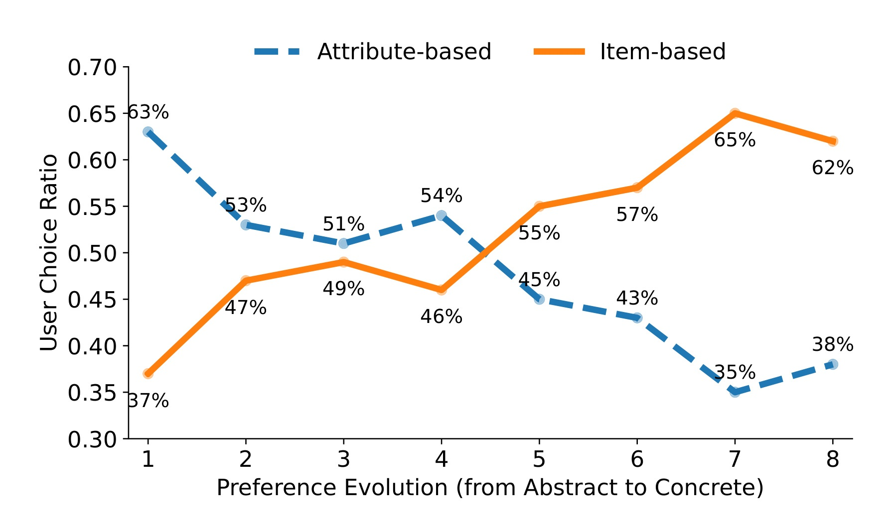
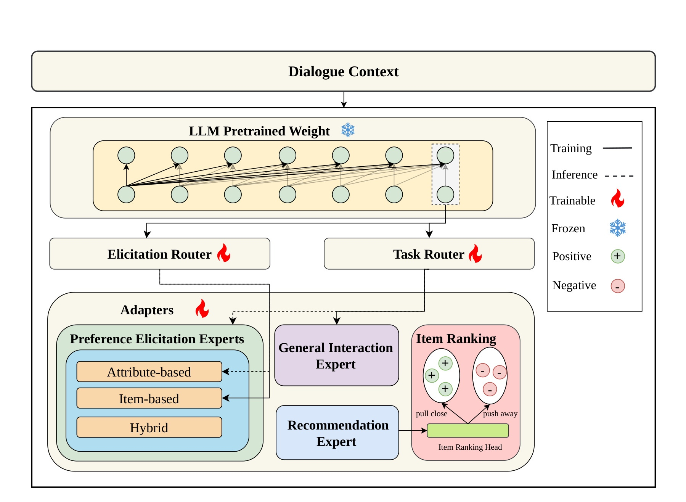
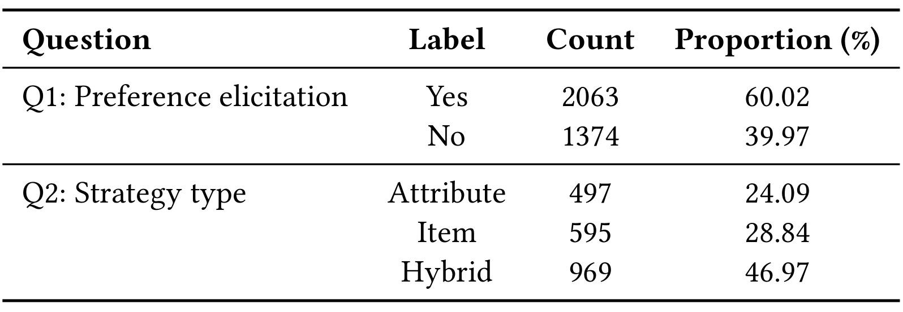
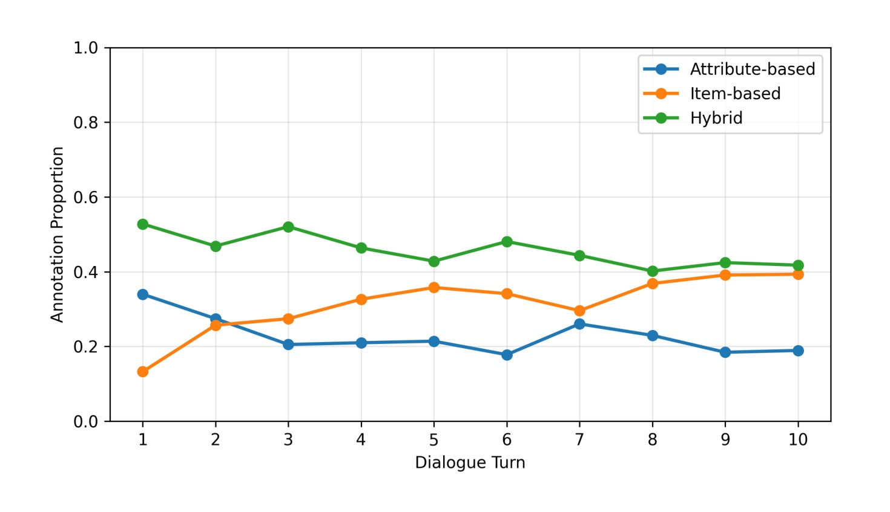
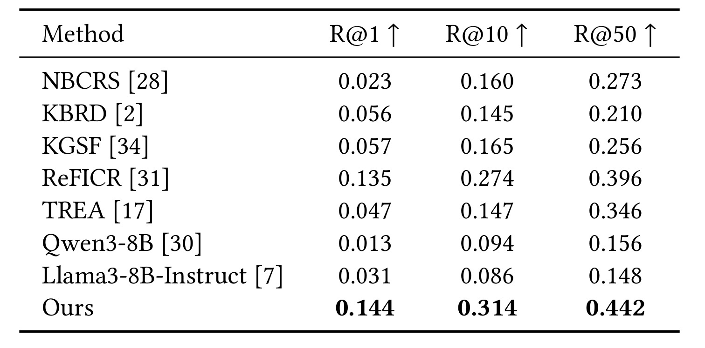
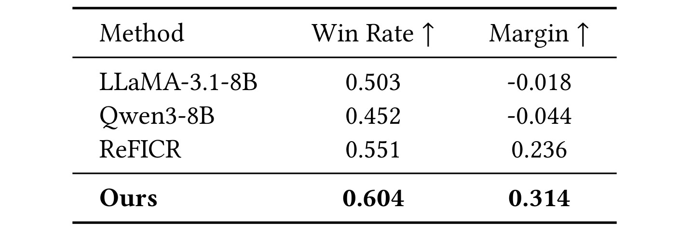
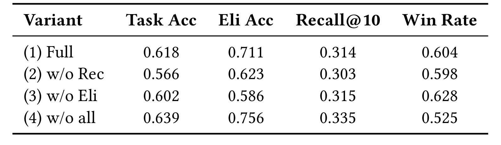
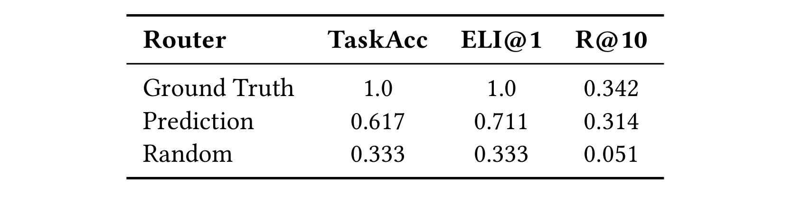
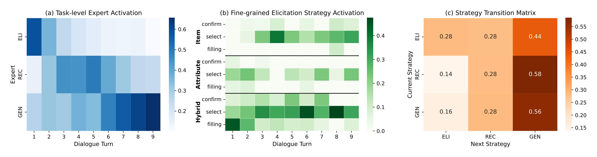

Sheffield-COPE：动态偏好诱导让对话推荐学会何时问、怎么问
[toc]
这篇论文讨论的是 conversational recommender system 里一个很容易被低估的问题：系统不只是要“会推荐”，还要会判断当前轮次到底该继续问偏好、该拿属性来问、该拿具体物品来让用户比较，还是已经可以进入推荐或闲聊收束。作者来自 University of Sheffield 与 Bloomberg，把这个问题拆成两个交付物：一个带细粒度偏好诱导标注的数据集 InPE，以及一个用两级路由和多个专家模块显式学习策略选择的模型 COPE。它适合推荐系统方向阅读，因为论文关心的是对话推荐链路里的交互策略、用户偏好收集和 item ranking，而不是单纯的大语言模型聊天能力。
论文入口：arXiv:2607.06765。作者为 Feng Xia、Shuo Zhang、Xi Wang；事实包记录的一作机构为 University of Sheffield，合作机构包含 Bloomberg。项目入口在论文文本中给出为 InPE GitHub，但本笔记只依据事实包与 PDF 内容做精读，不把外部页面作为额外事实来源。
然而，在一场对话中，何时采用偏好诱导、又应选择哪一种诱导策略，仍然很大程度上没有被充分探索。
1. 背景和问题
传统推荐系统大多从历史点击、评分、购买、知识图谱或隐式行为里推断用户偏好；对话推荐系统的优势则在于它可以主动向用户收集新线索。问题在于，“主动问”本身不是一个二元选择。一个电影推荐场景里，用户刚开始说“想看点轻松的电影”时，问“你喜欢什么类型”可能比直接给片名更自然；当用户已经说出喜欢某个导演、风格或几部候选电影时，再问泛泛的 genre 反而效率低，拿两个具体 item 让用户比较可能更容易逼近真实偏好。论文把这种差别称为 preference elicitation strategy 的时机和形式选择问题。
已有 conversational recommendation 工作通常解决三个相邻问题：第一，如何表示对话上下文；第二，什么时候推荐 item；第三，如何把 item、实体、属性或知识图谱接入生成模型。但它们往往默认一种偏好诱导方式，尤其偏向 attribute-based question，例如询问 genre、作者、价格区间、风格标签。item-based elicitation 也存在，比如让用户在两个电影之间做 pairwise choice，或者从一组候选里挑更喜欢的 item；不过很多系统把它当成局部机制，而不是随着对话阶段动态切换的策略空间。COPE 这篇论文的切入点就是：如果用户偏好从抽象到具体不断演化，那么策略本身也应该演化。

Figure 1 是全文最重要的问题证据。横轴把用户偏好演化拆成 1 到 8 个阶段，从抽象到具体；纵轴是用户选择某种诱导策略的比例。蓝色的 attribute-based 曲线在第一阶段达到 63%，随后整体下降；橙色的 item-based 曲线从 37% 起步，到后期超过属性式策略，并在第七阶段达到 65%。这说明“问属性”不是一直最优，只是在用户还没有形成明确候选空间时更省认知成本；当偏好变得具体，物品比较反而更贴近用户决策。论文后面的 InPE 标注、COPE 路由和实验都围绕这条曲线展开：系统应该把 dialogue stage、context 和 strategy 共同建模，而不是只在自然语言里隐式地猜。
作者把研究问题写得比较明确。RQ1 问的是单一偏好诱导策略是否足以覆盖不同对话阶段；RQ2 问不同策略是否呈现 stage-dependent applicability；RQ3 问显式建模 elicitation strategy 能否提升 CRS 性能。这个问题有工程意义：如果线上对话推荐只用一个“继续追问属性”的 prompt 模板，早期可能显得主动，后期却可能拖慢推荐；如果只靠 LLM 的隐式生成能力，不把“当前该执行什么动作”作为可训练、可评估的变量，就很难知道失败来自 item ranking、response generation，还是策略选择本身。
论文的第一个回答来自 328 名众包参与者的 preliminary user study。参与者在预设对话场景中选择更偏好的系统回复，而这些回复对应 attribute-based 或 item-based 方法。结果显示，认为 attribute-based 在所有场景都足够的比例只有 21%，认为 item-based 在所有场景都足够的比例也只有 25%；更多用户认为它们只在多数或少数场景有效。换句话说，两种策略都不是全局最优。作者进一步设计了八个对话场景，覆盖 preference exploration、preference refinement 和 post-recommendation readjustment，发现早期更偏向属性探索，后期更偏向 item 选择或比较。这给后续数据集和模型设定了清晰目标：学习一个能随上下文改变动作的 proactive CRS。
从推荐系统角度看，这篇论文也在提醒一个评估盲点。很多 CRS 模型用 Recall@k 或 NDCG 类指标衡量最后推荐是否命中目标 item，但在多轮对话里，中间每一轮“问什么”会影响后续候选空间、用户负担和最终接受度。COPE 把任务拆成 system action、elicitation strategy、recommendation objective 三个维度，相当于把对话推荐从“生成下一句话”重新表述为“在结构化动作空间里做顺序决策”。这个表述不一定覆盖所有线上策略，比如价格敏感、可解释性、冷启动风险和多目标业务约束还没有进入动作空间；但它比纯 prompt-based CRS 更容易被诊断，也更适合和推荐链路中的策略模块对接。
2. 方法
方法部分可以按论文原文顺序理解为三层：先用 InPE 给“该不该问、怎么问、问完是否更好”提供监督信号，再把对话推荐写成结构化动作空间，最后用 COPE 的两级路由和专家适配器执行这些动作。这样做的重点不是把 LLM 变得更大，而是把原本隐含在下一句生成里的策略决策显式化：系统先判断当前 turn 是偏好诱导、推荐还是一般交互；只有进入偏好诱导时，再判断应该走 attribute、item 还是 hybrid。
2.1 InPE：从候选轮次到策略标签
InPE 以 INSPIRED 的 999 个电影推荐对话为基础，原始数据平均每个对话 21.15 轮，但没有 turn-level 的 preference elicitation strategy 标注。作者先用 Qwen3-32B 过滤 10,576 个 dialogue turns，找出可能需要偏好诱导的候选，再让通过资格测试的人工标注员逐轮验证。一个候选 turn 会依次回答五个问题：是否需要偏好诱导；如果需要，策略是 attribute-based、item-based 还是 hybrid；在该策略下哪条 response 最合适；它是否优于 raw response；如果优于原回复，改进原因是什么。每个 turn 由三名标注员独立处理，最后通过多数投票形成标签；没有多数时由专家标注员裁决。这个流程让后续模型不只学习“回复文本”，还可以学习 need、strategy 和 preference 三类监督信号。
三类策略的边界也对应真实对话行为。Attribute-based 是询问 genre、author、style 等属性；item-based 是让用户在具体物品之间比较、选择或确认；hybrid 则同时使用属性和物品线索。论文的 case study 显示，用户最初只提出电影推荐需求时，系统适合用 attribute filling 询问大类偏好；当用户已经表达 lighthearted 并提到具体电影后，系统改用 item_select，让用户在候选电影间做选择；等偏好收敛后才进入 recommendation。这个例子解释了为什么 COPE 需要 stage-aware 策略：同一句“继续问一下”在不同阶段可能承担完全不同的用户建模功能。
2.2 顺序决策与结构化动作空间
论文把第 t 轮上下文定义为用户话语和系统话语交错组成的历史序列，这个序列保留了用户已经表达过的需求、系统已经追问过的问题以及当前新输入，因此是所有动作选择的条件。这样定义的好处是，系统可以根据已经收集到的偏好密度和当前用户意图来判断下一步是否还需要诱导：
系统要学习策略 (\pi : C_t \rightarrow A_t)，但这里的动作不是直接生成下一句文本，而是先把系统要执行的对话功能拆成可诊断、可监督的三元组。这个三元组同时保留高层动作、偏好诱导方式和推荐目标，便于后续分别评估错误来源，也便于把对话策略和推荐排序模块解耦：
符号解释：(u_i) 和 (s_i) 分别表示第 i 轮用户与系统话语，(a_t) 表示 system action，包括 Elicit、Recommend、General，(\sigma_t) 表示偏好诱导策略，包括 Attr、Item、Hybrid，(\phi_t) 表示推荐目标或排序逻辑。这样拆分后，系统失败就不再只是“生成得不好”，而可以定位为动作层、策略层或排序目标层错误。传统 LLM CRS 常用语言模型目标 (L_{LM}=-\sum_i \log P(x_i\mid x_{<i},C_t))，它把所有决策都埋进 token 序列；COPE 则把回复写成动作条件生成的边际化：
符号解释：(s_t) 是系统在当前轮的回复，(A) 是候选结构化动作空间，(P(A_t\mid C_t)) 是策略选择概率，(P(s_t\mid C_t,A_t)) 是在动作已定时生成回复的概率。这个公式是论文方法的分界线：它要求模型先显式估计当前该做什么，再生成自然语言或推荐结果，因此后续可以单独评估 task accuracy、strategy accuracy、Recall 和 pairwise response quality。
2.3 COPE：两级路由的专家化执行路径
COPE 使用 Qwen3-8B 作为共享 LLM backbone (\Phi)，在其上挂多个小规模专家适配器 (\Delta\Psi_k)。这些专家不是为了增加模型容量，而是为了让偏好诱导、推荐和一般交互走不同执行路径。路由分两级：task router 先在 Elicit、Recommend、General 中选择高层动作；若选择 Elicit，elicitation router 再在 attribute、item、hybrid 中选择策略。这套两级路由把“该不该问”和“怎么问”拆开，核心机制是用硬路由把上下文送到一个专家，而不是让一个通用 adapter 同时承担所有对话策略。

Figure 4 展示了 COPE 的组件连接。左上是 dialogue context 和冻结的 LLM pretrained weight；中间的 task router 负责高层动作选择，elicitation router 负责偏好诱导内部的策略选择；下方专家包括 preference elicitation experts、general interaction expert、recommendation expert，右侧 item ranking head 用正负 item 表示进行拉近和推远。红色闪电表示可训练模块，灰色雪花表示冻结模块。这个图说明 COPE 不是把所有训练样本混给同一个 LoRA，而是让不同 turn 激活不同专家，从而让 attribute filling、item select、recommendation ranking 学到差异化行为。
专家输出不是重新训练整个 LLM，而是在共享骨干表示上叠加当前被路由选中的专家增量；这个 hard-routing 结构可以用下面的输出公式表示。它的含义是每一轮只让一个专家负责当前策略执行，从而减少不同策略之间的参数互相干扰，并让每条训练样本只强化对应的行为路径：
路由器需要一个上下文表示来判断当前对话处在什么状态，论文直接从冻结 LLM 的最后位置表示中取出 (h_t)，避免把路由特征另做一套复杂编码器。这个选择让 router 依赖同一个语言理解空间，也让专家参数保持轻量，同时避免为了路由额外引入一套难以解释的特征工程：
有了 (h_t) 后，第一层 softmax 选择高层任务动作，第二层 softmax 只在进入偏好诱导时选择具体策略；两级概率分别写成下面两个式子。它们对应先判定系统职责，再细化提问方式的流程，而不是一次性扁平分类所有动作；这样也能在错误分析时区分 task 错和 strategy 错：
符号解释：(E) 是专家集合，(\gamma_t) 是被激活的专家索引，(I(\gamma_t=k)) 保证每轮只启用一个专家增量，(h_t) 是上下文隐藏表示，(W_{task}, b_{task}, W_{str}, b_{str}) 是两级路由器参数。这个设计的风险也很清楚：如果第一层把需要推荐的 turn 判成 general，第二层完全没有机会；如果第二层把 item-based 判成 attribute-based，专家能力再强也会被错误调度。论文后面的 routing intervention 正是为了验证路由是不是瓶颈。
2.4 多任务学习和训练/推理差异
训练目标由三部分组成。第一部分是路由交叉熵，它把 task label 和 strategy label 分开监督，并且只在真实任务为 Elicit 时才训练策略分类器。这样可以避免把非诱导轮次也强行压进 attribute、item、hybrid 的策略空间，并让路由监督更贴近真实多轮对话的条件结构：
第二部分是激活专家的 supervised fine-tuning，它让当前路由路径学习对应回复，而不是让未激活专家也被同一条样本更新。这保证 preference elicitation、recommendation 和 general interaction 的语言行为能够在参数上保持分工：
第三部分是推荐专家的 InfoNCE 式排序损失，它把对话上下文表示和正负 item 表示放到同一相似度空间里，直接服务于推荐 turn 的 item ranking。没有这个目标时，模型可能只学会说出策略感知回复，却不能把偏好线索转化为候选排序收益，因此推荐专家必须同时承担语义生成和 item 匹配：
符号解释：(\alpha_t^) 是真实 task label，(\sigma_t^) 是真实策略标签，(\lambda_\alpha) 与 (\lambda_\sigma) 控制两类路由监督强度；(x_i) 是专家生成序列 token；(e_u) 是对话上下文表示，(e_i^+) 是正样本 item，(e_{i-}^{(j)}) 是负样本 item，(\tau) 是温度。论文实现使用 Qwen3-8B、LoRA rank (r=8)、(\alpha=16)、1 epoch、AdamW、峰值学习率 (2\times10^{-5})、warmup ratio 0.03、batch size 8、4 次梯度累积、最大长度 2048，并在单张 A100 80GB 上用 BF16 训练。
训练阶段使用 teacher-forced routing：真实标签决定 (\gamma_t)，router 用 (L_{route}) 学习，但专家更新不会被 router 预测错误污染。推理阶段则要先预测 (\hat{\gamma}t=\arg\max P(\alpha_t,\sigma_t\mid C_t))，再用 (\Phi(C_t)+\Delta\Psi(C_t)) 生成回复或推荐结果。这个训练/推理差异是理解实验的关键：专家可能在真实标签调度下学得不错，但线上收益取决于 router 能不能把每个上下文送到正确专家。换言之，COPE 的上线质量不只是模型容量问题，而是路由准确性、专家专门化和推荐损失共同决定的系统问题。}_t
3. 实验结果
3.1 InPE 数据质量和策略分布
InPE 的构造先从 INSPIRED 的 10,576 个 dialogue turns 出发。LLM filter 标记出 3,437 个可能需要偏好诱导的候选 turn，占 32.5%；人类验证后，2,063 个 turn 被确认需要 preference elicitation，另有 1,374 个被判定不需要。这个比例说明 preference elicitation 不是每轮都发生，也不是稀有事件，而是对话推荐中相当常见但需要判别时机的动作。

Table 1 给出了两个层级的标注统计。Q1 是是否需要 preference elicitation：Yes 为 2063，占 60.02%；No 为 1374，占 39.97%。Q2 是在需要诱导的 turn 中选择策略类型：Attribute 有 497 个，占 24.09%；Item 有 595 个，占 28.84%；Hybrid 有 969 个，占 46.97%。这组数字有两个含义。第一，Hybrid 占比最高，说明真实对话中很多偏好收集同时涉及属性和 item，而不是教科书式二分。第二，Item-based 的比例高于 Attribute-based，和“CRS 默认问属性”的常见设计形成对照，也支持论文要动态建模策略的动机。
作者还检查了标注出来的策略是否随对话 turn 变化。Table 1 只给整体比例，不能告诉我们早期和后期是否不同；Figure 3 则把三类策略按 turn 展开。图中 attribute-based 在早期更高，item-based 在后期逐渐上升，hybrid 在多个 turn 中保持稳定存在。这个趋势和 preliminary user study 的 Figure 1 互相印证：当用户需求还抽象时，属性填充可以快速缩小空间；当用户已经提供部分偏好时，item comparison 或 selection 更能捕捉细微口味。

Figure 3 的读法需要小心。它不是说每个真实对话都必然按固定 turn 从 attribute 过渡到 item，而是说在归一化后的 turn 分布里，策略选择呈现统计倾向。Hybrid 曲线相对平稳，表明很多 turn 需要同时借助 item 和 attribute 线索；Attribute 在早期占优势，说明 broad preference exploration 仍有价值；Item 在后期上升，说明当候选空间变得更具体时，用户更愿意用具体 item 表达偏好。对工程实现来说，这意味着路由特征不应只看当前最后一句，还应包含已收集偏好的具体程度、候选集是否已经缩小、用户是否已经提过示例 item 等状态。
人类偏好评估也支持 strategy-aware response。Table 3 没有作为图片裁入，因为它只有三行，但结果很关键：Item-based 策略感知回复被认为 better 的比例为 89.34%，Attribute-based 为 95.50%，Hybrid 为 89.85%。这说明标注员不仅选择了策略，还认为基于这些策略生成的回复多数优于原始系统回复。与此同时，Table 4 显示 Krippendorff's (\alpha) 在 Q1 preference elicitation decision 上只有 0.244，在 Q2 strategy type classification 上为 0.531。前者偏低，说明“当前是否真的需要继续问偏好”是主观且边界模糊的；后者中等，说明一旦确定需要问，区分 attribute、item、hybrid 相对稳定。这个结果既证明 InPE 有价值，也提醒模型训练的标签噪声不能忽略。
3.2 推荐质量与响应偏好
实验使用 InPE 的 6,719 个 turn-level samples，按 6:2:2 划分训练、验证和测试。标签包括 task label、preference elicitation turn 的 strategy label、recommendation turn 的 target items，以及 strategy-aware response 与 baseline response 的 human preference pair。作者从三个角度评估：Recommendation Quality 使用 Recall@k；Decision Quality 使用 task accuracy 和 strategy accuracy；Response Quality 使用 pairwise win rate 和 log-likelihood margin。Pairwise margin 定义为：
其中 (y_w) 是人类偏好的回复，(y_l) 是较不偏好的回复。这个指标避免只看推荐命中，因为一个 CRS 可能最终推荐不错，却在中间对话里反复追问或生成低质量解释。

Table 6 是主结果表。COPE 在 R@1、R@10、R@50 上分别达到 0.144、0.314、0.442，均高于表中 baseline。对比最强的 ReFICR，R@1 从 0.135 到 0.144，R@10 从 0.274 到 0.314，R@50 从 0.396 到 0.442；对比 KG-based 方法 KBRD、KGSF、TREA 和 prompt-based Qwen3-8B、Llama3-8B-Instruct，差距更明显。这里的重点不是 COPE 数值绝对很高，而是在同一个 InPE 任务上，显式策略建模比只依赖 LLM 或 KG 结构更能把对话线索转化为 item ranking 信号。尤其 R@10 与 R@50 的提升说明，策略选择不只影响下一句对话，还会改变后续候选排序时能利用到的偏好证据。

Table 7 只比较 LLM-based CRS，因为 pairwise evaluation 依赖模型给人类偏好回复更高 likelihood。LLaMA-3.1-8B 的 Win Rate 为 0.503、Margin 为 -0.018，Qwen3-8B 为 0.452、-0.044，接近或低于随机判断；ReFICR 提升到 0.551、0.236；COPE 达到 0.604、0.314。这个结果和 Table 6 互补：COPE 不只是更会排序 item，也更倾向于给人类认为更好的策略感知回复。对于对话推荐，这一点很重要，因为用户可能在还没看到最终推荐之前，就因为系统问得不合适而退出；因此 Table 7 更像是对“问法是否被用户接受”的间接验收，补足了推荐命中率无法覆盖的交互质量。
3.3 消融、路由干预和机制分析
消融实验揭示了一个反直觉现象。作者分别移除 Recommendation expert、Elicitation expert，或者移除全部 specialized experts，让 General expert 处理对应请求。Table 8 显示，w/o all 在 Task Acc、Eli Acc 和 Recall@10 上反而最高，分别为 0.639、0.756、0.335；但它的 Win Rate 最低，只有 0.525。Full model 的 Task Acc 为 0.618、Eli Acc 为 0.711、Recall@10 为 0.314、Win Rate 为 0.604。这个结果说明，单一 adapter 可能在分类或 recall 指标上更稳定，因为它不需要复杂协调；但它生成的策略行为更 generic，用户偏好层面的 response quality 反而变差。

Table 8 的价值在于防止把 COPE 读成“专家越多，所有指标都越高”的简单故事。w/o all 在 Recall@10 上高于 Full，说明多专家 hard-routing 会引入协调成本；w/o Eli 的 Win Rate 为 0.628，甚至高于 Full，但 Recall@10 和策略准确率结构不同；w/o Rec 的各项表现也有下降。作者的解释是，Full model 在多个专家之间平衡 recommendation 和 elicitation，提供更稳健的 conversational quality；而统一模型虽然可以学到稳定决策和检索信号，却缺少细粒度策略行为。对落地系统来说，这提示我们不能只用 Recall@k 验证对话推荐策略，必须同时看用户偏好、追问轮次、问答负担和线上留存。
为了进一步拆清楚问题来自专家能力还是路由准确性，作者做了 routing intervention。Ground Truth 设置强制使用正确专家，TaskAcc 和 ELI@1 都为 1.0，R@10 升到 0.342；Prediction 使用模型预测路由，TaskAcc 0.617、ELI@1 0.711、R@10 0.314；Random 路由则跌到 R@10 0.051。这个实验非常关键：如果专家完全没学到东西，Ground Truth 路由也不会显著提升；如果路由无关紧要，Random 也不该崩得这么厉害。

Table 9 说明当前 COPE 的一个主要瓶颈是 routing quality。Ground Truth routing 的 R@10 为 0.342，比 Prediction 的 0.314 高，也比 Random 的 0.051 高很多。也就是说，专家路径本身有能力产生更好的推荐，但推理阶段能否选中正确路径决定了收益能释放多少。这个结论也解释了前面的消融现象：统一模型少了路由错误，某些 accuracy/recall 指标更稳；多专家模型增加了表达力，但必须付出路由学习成本。后续如果想把 COPE 用到更复杂商品、内容或广告推荐里，路由校准、置信度拒识、fallback policy 可能比单纯增加专家数量更重要；否则系统会在“专家会做”和“实际选中专家”之间损失大量收益。

Figure 5 从三个角度看路由行为。左图是 task-level expert activation，展示 ELI、REC、GEN 随 dialogue turn 的激活概率；中图把 ELI 进一步拆成 attribute、item、hybrid 下的 confirm、select、filling 子策略；右图是 ELI、REC、GEN 之间的 state transition matrix。作者观察到，attribute-related filling 更常出现在早期，item 和 hybrid 中的 select 动作在中后期更常见；GEN 是许多状态之后最常见的 next strategy，REC 和 GEN 也有明显 self-transition，而 ELI 更容易转到 GEN。这个结果和 Figure 1、Figure 3 形成闭环：用户偏好演化、数据标注分布和模型路由模式都指向同一个 stage-wise 规律。
总体来看，COPE 的实验主张比较完整。第一，数据层面证明 InPE 包含足够的 elicitation-needed turns 和策略多样性；第二，用户研究与标注分析说明策略选择确实随阶段变化；第三，模型层面在 Recall 和 pairwise response quality 上超过 baseline；第四，消融与路由干预指出收益不只来自 LLM backbone，而来自显式动作空间、专家路径和路由机制的组合。它的不足也同样明显：InPE 来自 INSPIRED 电影推荐语境，跨领域泛化还没有验证；Q1 标注一致性偏低，说明“是否需要问”这件事本身有主观性；多专家模型在部分 accuracy/recall 指标上不总是最优，说明系统质量要看多指标平衡。
4. 总结
这篇论文的核心贡献可以概括为一句话：它把对话推荐里的“问偏好”从一个模糊的 prompt 行为，变成了可标注、可训练、可路由、可评估的策略选择问题。InPE 提供了 turn-level 的 elicitation need、strategy type 和 response preference 标注；COPE 则把 system action、elicitation strategy 和 recommendation objective 写成结构化动作空间，并用共享 LLM backbone 加两级 router 和多个专家 adapter 来执行这些动作。对于推荐系统工程，最有价值的是它把“为什么系统问得不对”拆成了数据、路由、专家和排序四个可诊断环节。
我认为这篇论文适合放在 conversational recommendation 与 proactive recommendation 的交叉位置阅读。它不是一个完整线上 CRS 方案，因为没有处理长期用户画像、业务约束、多目标排序、实时反馈闭环和跨域商品结构；但它提供了一个很实用的建模接口：早期用 attribute filling 缩小空间，中期用 item select 或 hybrid 策略辨析偏好，后期在推荐和 general interaction 之间切换。这样的接口可以和现有召回/排序系统连接，把 LLM 的生成能力限制在被路由选择的动作空间里，而不是让 LLM 自己隐式决定所有策略。
局限主要有四点。第一，InPE 基于 INSPIRED 电影对话，迁移到电商、新闻、短视频或广告场景时，attribute 和 item 的语义粒度会变，需要重新定义 hybrid 和 recommendation objective。第二，Q1 的 Krippendorff's (\alpha=0.244)，说明 preference elicitation need 标注噪声较大；如果直接用于强监督，模型可能学习到不稳定的边界。第三，COPE 的 routing intervention 证明路由是瓶颈，真实线上系统还需要 confidence、fallback 和 exploration 机制。第四，消融结果显示 w/o all 在部分指标上更高，说明多专家架构并非无条件优越，必须用 response quality、用户满意度和推荐命中共同评估。
后续可以重点跟进三个方向。第一，把 InPE 式标注扩展到多领域数据，观察 attribute-based、item-based、hybrid 的阶段规律是否稳定。第二，给 router 加不确定性估计：当 task router 或 strategy router 置信度不足时，可以退回更保守的问题或请求用户确认。第三，把 COPE 的动作空间接入真实推荐链路，让 (\phi_t) 不只是论文里的 ranking objective，而是能表达多目标排序、探索/利用、库存或内容安全约束。若这些方向成立，COPE 的意义就不止是一个模型，而是把对话推荐的“追问策略”变成可被系统化优化的模块。